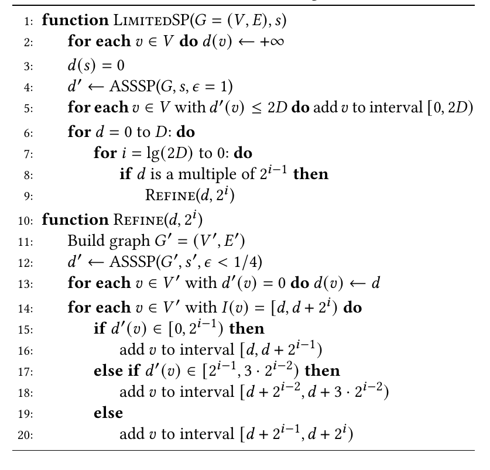
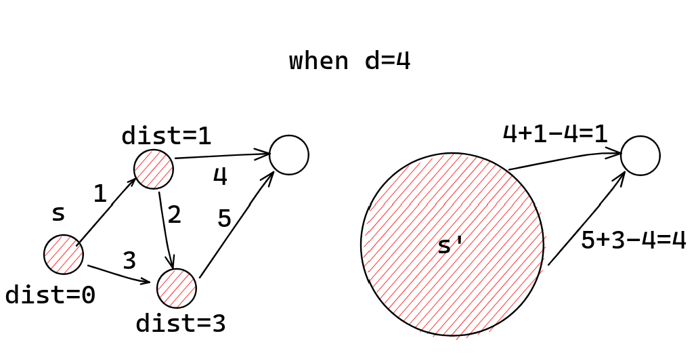

问题求解（三） Open Topic 6 笔记
OT：单源最短路问题有很多并行算法，例如 Δ-stepping 算法、Radius Stepping 算法等，请调研至少 2 种算法（其中至多 1 种来自上述例子），结合例子介绍算法的设计与分析，比较异同并分析优劣。
基于 Goldberg 算法的 SSSP 并行算法
本文先介绍一种可以处理非负权图的 \(L\)-限定距离 SSSP的并行算法，work 为 \(\tilde O (m)\)，span 为 \(n^{1/2+o(1)}L^{1/2}\) WHP。
\(L\)-限定距离 SSSP: 只计算途中 \(dist(s, v)\le L\) 的 \(v\) 的最短距离 \(v.d=dist(s, v)\)，而将 \(dist(s, v)>L\) 的 \(v\) 求得的 \(v.d=\infty\)。
WHP: With high probability，有 neglible 的概率失败。
然后在此基础上再介绍基于 Goldberg's algorithm 的整数权的 SSSP 并行算法。设图中所有权的边权均 \(\ge -L\)，则 work 为 \(\tilde O(m\sqrt n\log N)\)，span 为 \(n^{5/4+o(1)}\) WHP。1
\(L\)-限定距离 SSSP
两个黑盒结果
“单（多）点连通性判断问题”：给定图 \(G=\langle V, E\rangle\) 和起点集合 \(S\subseteq V\)，判定图中哪些点可以从 \(S\) 中某个点可达。在该文2中给出了 \(\tilde O(m)\) work 和 \(n^{1/2+o(1)}\) span WHP 的结果。
“逼近 SSSP 问题（ASSSP）”：给定图 \(G=\langle V, E\rangle\) 和起点 \(s\)，要求求得“过估距离” \(d'(v)\) 满足 \(dist(s, v)\le d'(v)\le (1+\epsilon)dist(s, v)\)。对于固定的 \(\epsilon\)，该文3给出了 \(\tilde O(m)\) work 和 \(n^{1/2+o(1)}\) span WHP 的结果。
\(L\)-限定距离 SSSP 主过程
设 \(D\) 是大于 \(L\) 的最小的 \(2\) 的幂次。该算法先运行一次 ASSSP with \(\epsilon=1\)。对于 \(d'(v)\ge 2D\) 可知 \(dist(v) \ge D>L\)，这些点一定不用在 \(L\)-限定距离 SSSP 中考虑，直接设为 \(v.d=\infty\)。剩下的点的 \(dist(v)\) 一定落在 \([0, D)\) 区间。对于 \(d'(v)=0\) 的，可知 \(dist(v)=0\)。
该算法正是依赖于“逐渐减小范围”的方法来求出 \(dist(s, \cdot)=d\) 的所有顶点：假设已经找到了 \(dist(s, \cdot)<d\) 的所有顶点，并不再考虑。那么，剩下的顶点可以另构图，使得整体的 \(dist'(s', \cdot)\) 都减小 \(d\)：对于图中所有的边 \((u, v)\) 满足 \(dist(s, u)<d\)，\(dist(s, v)\ge d\)，相应地建边 \((s', v)\) 且
\[ w'(s', v)=w(s, v)+dist(s, u)-d. \]


假设当前考虑 \(v\) 的 \(dist(s, v)\) 范围是 \([d, d+2^i)\)，则在作这个变换后，可以知道对于这些 \(v\) 有 \(dist'(s', v)\in [0, 2^i)\)。使用 \(\epsilon<1/4\) 的 ASSSP 后，可以根据得到的 \(d'\) 分为三类（注意上界为 \(5/4\cdot 2^i\)）：
- \(0\le d'<2\cdot 2^{i-2}\)，则 \(0\le dist'(s', v)<2\cdot 2^{i-2}\)，进而 \(d\le dist(s, v)< d+2\cdot 2^{i-2}\)。
- \(2\cdot 2^{i-2}\le d'<3\cdot 2^{i-2}\)，则 \(2^{i-2}\le dist'(s', v)< 3\cdot 2^{i-2}\)，进而 \(d+2^{i-2}\le dist(u, v)<d+3\cdot 2^{i-2}\)。
- \(3\cdot 2^{i-2}\le d'<5\cdot2^{i-2}\)，则 \(2\cdot 2^{i-2}\le dist'(s, v)<4\cdot 2^{i-2}\)，进而 \(d+2\cdot 2^{i-2}\le dist(u, v)<d+4\cdot 2^{i-2}\)。
于是划分成了 \(2^{i-1}\) 长度的三小段。在 \(\log L\) 次后即可计算完成 \(dist(s, v)=d\) 的顶点。
简要分析可知，该算法有 \(\tilde O(m)\) work 和 \(n^{1/2+o(1)}L\) span 的结果。在加上一定的随机赋优先级后，有着期望 \(\tilde O(m)\) work 和 \(n^{1/2+o(1)}\sqrt L\) span WHP 的结果。
基于 Goldberg 算法的 SSSP
Goldberg 可以解决的问题：解决整数权（可以有负权）的 SSSP 问题。设图中所有边权 \(\ge -N\)，则 Goldberg 算法的时间复杂度为 \(O(m\sqrt n\log N)\)。
该文4对其并行化后，得到了 \(\tilde O(m\sqrt n\log N)\) work，\(n^{5/4+o(1)}\) span WHP 算法，并行率至少为 \(m^{1/4-o(1)}\)。
Goldberg 简述
Goldberg 的核心思想是构造一个“价值函数” \(p\) 满足
\[ \forall (u, v)\in E, p(v)\le p(u)+w(u, v). \]
构造新图 \(G'=\langle V, E, w'\rangle\)，在 \(G'\) 中
\[ \forall (u, v)\in E, w'(u, v)=w(u, v)+p(u)-p(v). \]
可知 \(w'(u, v)\ge 0\)。
而对于原图中的一条路径 \(p=\langle e_1, e_2, \cdots, e_m\rangle\)，可知
\[ \begin{aligned} w'(p)&=\sum_{i=1}^{m-1}w'(e_i) \\ &=\sum_{i=1}^{m-1}[w(e_i)+p(u_i)-p(v_i)] \\ &=w(p)+p(s)-p(t). \end{aligned} \] 其中 \(s, t\) 分别是 \(p\) 的起点和终点。故 \(G'\) 中 \(s,v\) 最短路对应于 \(G\) 中的最短路。由于 \(G'\) 是非负权图，故可以使用 Dijkstra 算法求解。问题转化为了求出满足条件 \(p\)。
Goldberg 算法对图中的最小边权做递推。最终要求的是满足 \(\forall (u, v), w(u, v)> -N\) 的 \(p\)，记作 \(p_{N}(G)\)。方便起见，设 \(N\) 是 \(2\) 的幂次。递归方案如下：
- 对任意图，\(p_1(G)\) 是好构造的：此时 \(w(u, v)>-1\) 即非负，取 \(p\equiv 0\) 即满足条件。
- 若要求符合条件的 \(p_{2m}(G)\)，
- 若 \(w\) 全为偶数，则构造新图 \(G'=\langle V, E, w/2\rangle\)，在 \(G'\) 中得到 \(p_{m}(G')\)，则可令 \(p_{2m}(G)=2p_m(G')\)。
- 若 \(w\) 并非全为偶数，构造新图 \(G'=\langle V, E, \lceil w/2\rfloor\rceil\)，在 \(G'\) 中得到 \(p_m(G')\)，令 \(p_{2m}(G)=2p_m(G')\)，此时仍有一些边不满足条件：它们比预期差了 \(1\)。于是，会得到一个边权 \(\ge -1\) 的图。
下面只需要对该边权 \(\ge -1\) 的图 \(G_p\) 调整 \(p\) 的值即可。
先求其强连通分量并缩点，得到一个 DAG \(G'_p\)。若某个 SCC 中含有负边，则图中显然存在负环。记 \(G'_p\) 中有入边为 \(-1\) 的点称为“负点”，其集合记为 \(V_n\)，可以按以下方法逐渐缩小 \(V_n\) 最终致其为空集：
取 \(x\in V_n\)，记 \(x\) 可达的所有点为 \(S_x\)，将 \(S_x\) 的所有点 \(p\) 值降低 \(1\)。这样以后 \(x\) 就不再是负点了。
由于每次都需要重新求 SCC，时间复杂度为 \(O(mn\log N)\)。
注意到最长反链长等于最小链覆盖：DAG 中最长链和最长反链至少有一个超过 \(O(\sqrt k)\)，其中 \(k\) 是 \(V_n\) 的大小。如果我们提出一个一次性消除链的算法，一个一次性消除反链的算法，就可以解决了。
- 一次性消除反链：直接求出反链上的所有点可达的点，一起让 \(p\) 值减 \(1\) 即可。
- 一次性消除链：较为复杂，但也可以线性得到，略。
寻找最长链/最长反链是容易的：构造超级源点 \(s\) 并运行一次 DAG 上的 SSSP(时间 \(O(m)\))，设距离为 \(-d\) 的点集为 \(V_d\)，得到 \(V_0, V_1, \cdots, V_\tau\)。若 \(\tau\ge \sqrt k\)，则找到了一条长度 \(\ge \sqrt k\) 的链；否则由鸽巢原理，必然存在 \(|V_i|\ge \sqrt k\)，这是一条反链。
于是，每次都会使得问题规模 \(k'\gets (1-\frac{1}{\sqrt k})\cdot k\)，可以知道在 \(O(\sqrt k)\) 轮后 \(V_n\) 变为空集，每轮复杂度 \(O(m)\)，一共要进行 \(O(\log N)\) 次递推。最后还需进行一次 \(O(n\log m)\) 的 Dijkstra。
Goldberg 算法复杂度故为 \(O(m\sqrt n\log N)\)。
Goldberg 算法的并行化
外面的 \(O(\log N)\) 次递推，以及中间的 \(\sqrt n\) 次 \(V_d\) 迭代仍然保持顺序执行，如此，若内部的每次迭代可以做到 span \(f\) WHP，并保持 work \(\tilde O(m)\)，则最后可以得到 \(\tilde O(m\sqrt n\log N)\) work 和 \(f\cdot n^{1/2}\log N\) span WHP 的算法。在此处，我们使用得到 \(f=n^{3/4+o(1)}\) WHP 的算法。只需要注意到
- 求 SCC 可以归约到单点连通性5，进而用“单（多）点连通性判断问题”在 \(\tilde O(m)\) work 和 \(n^{1/2}+o(1)\) span WHP 内完成。
- 寻找最长链/最长反链运行的 SSSP 需要运行带负权边 \(-1\) 的 \(\sqrt k\)-限定距离 SSSP，在原文中给出了一个 \(\tilde O(m)\) work，\(n^{1/2+o(1)}\sqrt L\) WHP 的算法（在此略去），取 \(L=\sqrt k\) 满足条件。
- 一次性消除反链：对于给定的反链需要求出可达点，这也就是"单（多）连通性判断问题"，同 1.
- 一次性消除链：使用一个 \(\sqrt n\)-限定距离 SSSP，用了前一个算法，\(\tilde O(m)\) work，\(n^{1/2+o(1)}\sqrt L\) WHP，符合条件。
综上，最终我们得到了一个 \(O(m\sqrt n\log N)\) work，\(n^{5/4+o(1)}\log N\) span 的基于 Goldberg 算法的并行算法。